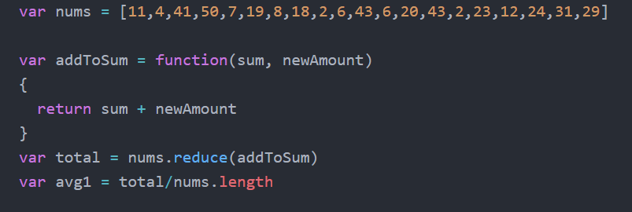
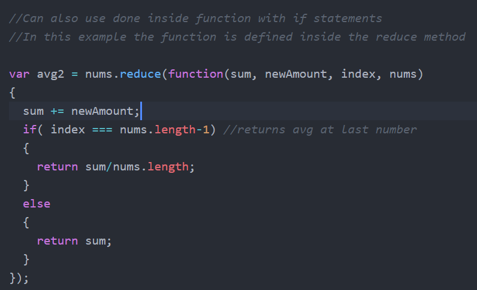

The reduce() method is simply a method that you can call on an array to distill import it into one single value. This is done with a callback function that is performed on each element of the array until all elements have been operated on. The reduce() method takes up to 4 parameters:
To solve for the mean of the data set given by Dr. B, I used two methods. Both used the accumulator and currentValue parameters but only the second uses index.
In the first method, reduce() is simply used to find the total and divided by the length. As you can see in the image below, the callback function is predefined and sinply adds and returns the two functions passed into into it, sum - the accumaltor, and newAmount - the current value. Reduce runs this function for each item on the list and returns the last value to the varaible total. The total is then divided by the length of the list to get the average.
The second method keeps all calculations inside the function rather than returning the accumulated total and dividing it externally. To do this, the function is defined within the reduce() methods parameters. This new function defined within reduce() also includes index as one of its parameters. Inside the new function, the += operators as each newAmount to the accumaltor, sum. The following if statement stops the code if the index is has reached the last element of the list, which it then returns the accumulated value divided by the length of the list to the variable avg2.
